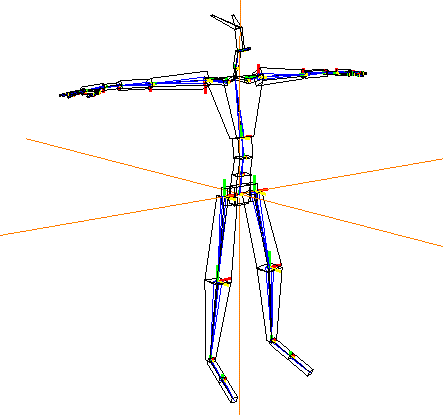

[N-World Contents] [Book Contents] [Prev] [Next] [Index]
Skeletons in N-Geometry
This chapter describes the menu commands in N-Geometry used to manipulate skins and skeletons.

In this Chapter
This chapter discusses the following topics:
For each operation, the types of elements upon which it can be performed are listed (skeletons, bones, and/or joints). If the operation functions differently for different element types, those variations are also described.
Adding a Skeleton Primitive
Creating a Skeleton Primitive
N-Geometry can generate a skeleton primitive. To add a skeleton to your current scene:
1. (CLICK-R) on the N-Geometry window.
2. (CLICK-L) on Main.
3. (CLICK-L) on Add New Object.
4. (CLICK-L) on Create.
5. (CLICK-L) on Skeleton.
The skeleton is generated at the global center, using the basic Biovision bone names, and with certain logical joint IDs and degrees of freedom (DOF) already applied (e.g., forearms and tibias are limited to movement around their own X axis). The DOF limits for the skeleton can be modified using the DOF editor, which is described later in this chapter.
Creating a Custom Skeleton
An entire chapter in the Skeletal Animation System Tutorial is devoted to building your own custom skeletons. The general process for building a skeleton is as follows:
After creating the basic structure of the skeleton, you can improve the skeleton by doing some of the following:
Saving and Loading Skeletons
Skeletons are saved and loaded just like other objects in N-Geometry. However, because skeletons have additional characteristics above and beyond polyhedra and other body types, there are some differences. For example, a skeleton can have attached "skins" or "objects" that require special attention when saving the skeleton (i.e., should be read back in when loading the skeleton).
Saving a Skeleton
What gets saved with a skeleton saved in the .geo format?
- Note. If an attached skin has not been saved when you save the skeleton, you are asked if you want to save the skin.
Saving a Skin
Skins are saved like other polyhedra, regardless of whether the skin is saved explicitly, or as a result of saving the skeleton to which it is assigned. The following elements are saved with a skin saved in the .geo format:
Saving Attached Objects
Attached objects, too, are saved like other polyhedra in N-Geometry, with one exception; if they are attached to a skeleton, a reference is saved to that skeleton. That means that when you read an attached object back into N-Geometry, the skeleton to which it was attached is also read in.
Loading a Skeleton
You can load a skeleton either explicitly (using N-Geometry), or by reading in a script that uses that skeleton. When you load a skeleton any assigned skins are also read in.
Any of the elements described in the section above, "Saving a Skeleton," on page 2-4 are read in with a skeleton. Note that some skeletons, especially those supplied by motion capture vendors, may contain presets for one or more of these elements.
Modifying Elements of a Skeleton
You can work with the entire skeleton, with bones (or collections of bones), or with joints (or collections of joints). You specify which type of element you want to modify by selecting the appropriate element type on the element sensitivity menu at the top of the N-Geometry menu:
Highlighting and Selecting Skeletons, Bones, or Joints
After you have selected the type of element you want to work with, move the mouse over the skeleton. As the cursor moves over the skeleton (or bone or joint), it is highlighted in green. Selected elements are highlighted in red. If you (SHIFT-L) on this element, one of the menus in Figure 2.1 is displayed.
Figure 2.1 Left, modifying a skeleton; middle, modifying a bone; right, modifying a joint. Notice that the element being modified is displayed at the top of the menu
Add
Joints
Adds bones to the selected joint by encoding their end points in 3D space.
Adding Bones by Encoding Points
To add a bone:
1. (SHIFT-L) on the joint you want to add the bone to.
2. (CLICK-L) on Add.
- The cursor changes to a cross-hair.
3. Move the cursor and (CLICK-L) where you want the segment to end.
- You can add multiple segments; move the cursor and (CLICK-L) at each point that defines a bone:
Figure 2.2 Adding a bone to a joint
- Note. The axes for the added bone are assigned using the best guess that SAS can make. You may have to use the Align/Rotate Axes command on individual bones to properly align their axes.
4. When you're done adding segments, (CLICK-R).
- This exits from "encoding" mode, creates the bone, and draws the bone frame around the bone.
Append
Adding Bones by Appending Wires
If you want to append a set of bones to a joint using a wire you've already encoded as a guide:
1. (SHIFT-L) on the joint you want to add the wire/bone to.
2. (CLICK-L) on Append.
3. (CLICK-L) on the wire you want to append to the joint.
Figure 2.3 Adding a wire to a joint as a bone (or bones)
- If the end of the wire and the joint to which it is being attached are not aligned in 3D space, an intervening bone is created automatically to fill the gap.
- Note. The wire used as a "guide" still exists after appending the bone.
Appending a Copy of an Existing Limb to a Joint
You can (CLICK-M) on Append to make copies of limbs on one part of a skeleton to another part of the skeleton. You can use this command, for example, to create multiple similar limbs on the same side of a skeleton.
Try this:
1. Create a backbone for a spider skeleton.
Figure 2.4 Create the backbone for the spider
2. Create one leg for the spider.
- Assign any joint IDs (using the Joint Identification command), or set DOF limits for the various joints using the DOF Editor.
Figure 2.5 Create one leg for the spider
3. (CLICK-L) on the joint you want to connect a limb to.
4. (CLICK-M) on append.
- (CLICK-L) on the segment that is at the start of the limb you want to attach. A copy of the limb is created and attached to the selected joint, as shown in Figure 2.6:
Figure 2.6 Copying the limb
5. Repeat the process for the other legs on that side.
- The segments on the leg stay selected until you create a new collection.

Figure 2.7 All legs copied for the same side
This is easy way to reduce the overall time spent on setting up a quality skeleton. If you have several limbs that all work alike, you can simply copy that limb rather than recreate it again from scratch.
- Note. Limits are not mirrored; if you are working with opposite sides, you'll need to copy a limb from both sides of the object, then attach the appropriate copy.
Appending a Skeleton to a Joint
You can append an entire skeleton to a joint if you (CLICK-R) on the Append command. You select the joint where you want to attach the skeleton, then select a second skeleton to be attached. This adds geometry to the first skeleton.
Suppose you wanted to add an insect leg you created earlier to the shoulder joint of a humanoid skeleton to create an "insect man." Rather than create the additional limb from scratch, you could use the Disconnect Limb command, as described in the section "Disconnect Limb," on page 2-28, to make a copy of the limb from another skeleton. (You could, of course, also create the limb from scratch.)
Try this:
1. Create or load the first skeleton.

Figure 2.8 The skeleton to which you want to attach another skeleton
2. Create or load the skeleton to attach.
Figure 2.9 The skeleton to attach
3. (SHIFT-L) on the joint of the first skeleton where you want to attach the second skeleton.
- In this case, we'll (CLICK-L) on the shoulder joint.
N-Geometry goes into body select mode, waiting for you to (CLICK-L) on the skeleton you want to attach.
4. (CLICK-L) on the skeleton you want to attach.
- The following dialog box is displayed:

Figure 2.10 A dialog box asks what should happen with the skeleton being attached
Figure 2.11 The skeleton to which you want to attach another skeleton
- Note. The second skeleton is attached at its root.
Align/Rotate Axes
Bones
Reorient the local axes of the selected bone, either explicitly or by comparing it to a neighboring bone.
The skeleton must be in its base state for you to modify any local bone axes. If you change any axes, you must save a new base state or reset the skeleton to its original base state before you can perform any other operations on the skeleton. If you try to rotate the axes on a bone when the skeleton is not in its base position, the following warning is displayed:
Figure 2.12 The skeleton must be in its base position to rotate the axes of any bone
Typically, if you import a skeleton from a vendor such as Acclaim or BioVision, the axes are already aligned with the bone. However, if you build a skeleton from wires, it's probable that at least some of the bones will have axes that are not properly oriented to the bone to which they belong.
You might want to change the bone direction so that you can cause bones to "mirror" the movement of their counterparts on the other side of the skeleton.
Aligning the Bone with its Superior
Figure 2.13 Defining a bone's direction
- The selected bone's direction and that of its superior is shown at the top of the menu. To change the bone direction, (CLICK-L) on the axis you want oriented along the length of the bone, and
Aligning a Bone with its Inferior
Rotating a Bone Along its Bone Axis
Attach
Skeletons, bones
Select an object to attach to the selected bone. Attaching an object to a single bone lets you move an object (like a hat or a sword) by moving a bone (like the head or hand) without changing the attached object's topology.
To attach an object to a bone:
1. (SHIFT-L) on the bone you want to attach the object to.
2. (CLICK-L) on Attach Object.
- A list of known objects is displayed.
3. (CLICK-L) on the object you want to attach to the bone.
- You're asked if you want to make the object's current position its new home position.
4. Typically, you'll (CLICK-L) on Yes.
- This resets the origin of the object to the global center (so that its transformation matrix matches the skeleton's), and ensures that the object is moved appropriately when the bone its attached to is moved.
- If the centers of the two objects are close enough, and the transformation matrix for the attached object should not be changed, (CLICK-L) on No.
For additional information on attaching object hierarchies to bones, to collections of bones, or to a skeleton, see the Skeletal Animation System Tutorial.
Detaching an Object from a Bone
To detach an object from a bone:
1. (SHIFT-L) on the bone you want to detach an object from.
2. (CLICK-M) on Attach Object.
- A list of objects attached to the bone is displayed.
Figure 2.14 Selecting an object to detach from a bone
3. (CLICK-L) on the object you want to detach from the bone.
Axis Move
Skeletons
To move the skeleton along a selected axis:
1. (SHIFT-L) on the skeleton.
2. (CLICK-L) on Axis Move.
- N-Geometry presents a list of axes along which the object can be moved. For a description of this menu, see the N-Geometry Reference Guide.
Axis Scale
Skeletons
To scale the skeleton along a selected axis:
1. (SHIFT-L) on the skeleton.
2. (CLICK-L) on Axis Scale.
- N-Geometry presents a list of axes along which the object can be scaled. For a description of this menu, see the N-Geometry Reference Guide.
Base
Skeletons
For a skeleton and its attached skins:
You can optionally update only the skeleton (leaving the skins in their current position).
The base state is similar to an absolute displacement (described in the N-Geometry Reference Guide). Skeletal poses are measured from this state, as are any skin displacements you may define.
Initializing a Skeleton to its Base State
To initialize a skeleton to its base state:
1. (SHIFT-L) on the skeleton.
2. (CLICK-L) on Base.
- The following dialog box is displayed:

Figure 2.15 Initializing a skeleton
Figure 2.16 Initializing a skeleton with no base state
If you (SHIFT-L) on this command, only the skeleton itself is initialized; the skins attached to the skeleton remain in their current position.
Saving the Skeleton's Current Position as its Base State
To save the skeleton's current position as the base state:
1. (SHIFT-L) on the skeleton.
2. (CLICK-M) on Base.
- The following dialog box is displayed:

Figure 2.17 Saving a base state for a skeleton
Renaming, Deleting, or Selecting a Base State
To rename or delete a save based state for a skeleton:
1. (SHIFT-L) on the skeleton.
2. (CLICK-R) on Base.
- The following menu is displayed:
Figure 2.18 Rename, delete, or select a base state
Renaming a Base State
Displays a list of base states saved for the skeleton. (CLICK-L) on the base state you want to rename, then change that name in the dialog box that appears.
Deleting a Base State
Displays a list of saved base states. After selecting the base state to delete, you're asked to confirm this choice.
Selecting a Base State
Select displays a list of saved base states. (CLICK-L) on the base state you wish to move the skeleton to.
Bone
Joints
Selects either the superior or inferior bone of the selected joint.
Selecting the Bone Above this Joint
To select the bone superior to this joint (the bone closer to the root):
1. (SHIFT-L) on the joint.
2. (CLICK-L) on Bone.
- Segments is highlighted in the sensitivity element menu and the superior bone is selected.
Selecting the Bone Below this Joint
To select the bone inferior to this joint (the bone further from the root):
1. (SHIFT-L) on the joint.
2. (CLICK-M) on Bone.
- Segments is highlighted in the sensitivity element menu and the inferior bone is selected.
Bone Display/Axes
Skeletons, bones
The Display Bone command controls the following aspects of a skeleton:
Toggling Bone Axis Display
Skeletons, bones
The bone axes are the local axes (displayed in red, yellow, and green) at the superior joint of each bone.
To toggle the display of bone axes:
1. (SHIFT-L) on the bone whose bone axes you want to hide or show.
2. (CLICK-L) on Display Bone.
- The axes for the selected bone(s) are made visible or invisible (depending on their current status).
Figure 2.19 Left, bone axes visible; right, bone axes off
Toggling Bone Frame Display
The bone frames are the blue lines which "frame" each bone. If the bone frame is turned off, you can see the wire upon which the bone is based.
To toggle the display of bone frame:
1. (SHIFT-L) on the bone whose bone frame you want to hide or show.
2. (CLICK-L) on Display Bone.
- The frames for the selected bone(s) are made visible or invisible (depending on their current status).
Figure 2.20 Left, bone frame visible; right, bone frame off
Fixed vs. Rotating Bone Axes
Skeletons
Some artist prefer for the axes to remain fixed when posing the skeletons; SAS allows both working methods.
Figure 2.21 Left, bone axes following bone; right, bone axes fixed
Check Skin
Skeletons
Displays a list of skin vertices that belong to more than one skin (for example, a vertex assigned to a default part then reassigned to a soft part). Vertices on a given skin should be assigned to only one part, as the effect when animating is additive; if two bones are driving a vertex, the vertex is translated by adding the rotations & displacements of both bones, not averaging them.
To see a list of vertices shared by more than one skin part:
1. (SHIFT-L) on the skeleton.
2. (CLICK-L) on Check Skin.
- A dialog box listing the vertices that are shared by more than one skin is displayed:
Figure 2.22 Showing which vertices are shared by more than one skin part
- Note. The displayed points are also selected in the N-Geometry window.
(CLICK-L) on [Next] to continue...
[N-World Contents] [Book Contents] [Prev] [Next] [Index]
 Another fine product from Nichimen documentation!
Another fine product from Nichimen documentation!
Copyright © 1996, Nichimen Graphics Corporation. All rights
reserved.